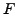

Next: Bibliography
Stefan Wild
Estimating Computational Noise in Iterative Solvers
Mathematics and Computer Science Division
Argonne National Laboratory
9700 S Cass Ave
Argonne Illinois 60439-4844
wild@mcs.anl.gov
Jorge Moré
Computational noise in deterministic simulations is as ill-defined a
concept as can be found in scientific computing. The effects (see e.g.,
[4]) of finite precision arithmetic, discretizations,
numerical solutions to systems of equations, and adaptive techniques are
typically swept under the rug of most modern simulation codes, the
outputs of which we tacitly assume are smooth.
We are motivated by simulation-based optimization problems of the form
![$\displaystyle \min\left\{ f(x)=F[s(x)] : x\in \Omega\subseteq \mathbb{R}^n\right\},$](img1.png) |
(1) |
where the objective is determined by the output,
, of a numerical simulation.
While the function  and the process approximated by  are typically
smooth, the computed
are typically
smooth, the computed  is often noisy. In addition to hampering
optimization techniques, this computational noise can complicate
sensitivity analysis and other applications, which depend on a smooth
simulation output.
is often noisy. In addition to hampering
optimization techniques, this computational noise can complicate
sensitivity analysis and other applications, which depend on a smooth
simulation output.
In this talk we present an algorithm, ECNoise, for quantifying
computational noise based on the work of Hamming [3].
Our theoretical framework is based on a model of stochastic noise in
univariate functions,
but requires only relatively few function evaluations and relies on very
few assumptions. In particular, we do not assume any specific
distribution forms for the cumulative errors. Our numerical tests suggest
the algorithm is also effective for deterministic and multivariate
functions.
Given a univariate stochastic
, we
estimate the noise level
by a weighted
root-mean-square of  -th order differences:
-th order differences:
Given a set of function values, ECNoise determines whether
the sampling distance  is sufficiently small, and an order
to estimate
. Numerical tests on stochastic
functions show that ECNoise generally produces consistent
results using as few as additional function evaluations,
independent of the dimension.
is sufficiently small, and an order
to estimate
. Numerical tests on stochastic
functions show that ECNoise generally produces consistent
results using as few as additional function evaluations,
independent of the dimension.
We illustrate the potential for using ECNoise to gain insight
into complex deterministic numerical simulations by considering the
fundamental problem of solving a sparse linear system.
- When is the computational noise more than simple round off?
- Is the noise level a property of the solver's operations or the
underlying (continuous) function?
- Does demanding a tighter tolerance reduce the noise?
Using the Krylov solvers in MATLAB [1] and the
symmetric positive definite matrices in the Florida Sparse Matrix
collection [2], we find surprising answers to these and
other questions.
Next: Bibliography
root
2010-03-02